Earthworks and Sacred Landscapes: Summer Study in the Southwest
Offered by the Carnegie Mellon School of Art
May 16 -31, 2005
The offering of this onsite class is very timely because Robert Smithson’s Spiral Jetty has resurfaced in the Great Salt Lake. Students in this summer study program will have the opportunity to visit several architectonic constructions known as Earthworks, explore natural monuments, and visit sacred Native American grounds. Most people are aware of Earthworks produced in the 1970s, however this knowledge stems only from visual representations published in books and journals. Very few individuals have had the opportunity to physically experience and explored these sacred sites that mark the landscape, and shape our perception of the earth as an art form.
This is an unconventional course, one without walls. The entire study experience will take place in the Southwestern region of the US: Arizona, Colorado, New Mexico and Utah. Students will be given the opportunity to observe and experience not only significant Earthworks but also sites created by Native American cultures and the forces of nature.
This is a full 9 unit credit course for CMU students or non-CMU students to be credited as Art or Humanities. A maximum number of 18 students can be enrolled.
Students and teachers will travel by bus to the actual sites in where the earthworks are located.
Professors:
Elaine A. King and Ruth Stanford will jointly direct the class, lead discussions and on site explorations.
Elaine A. King is an art historian, critic and international curator, former Director of the Center for Contemporary Art, Cincinnati, and former Director/Chief Curator of the Carnegie Mellon University Art Gallery. ek06@andrew.cmu.edu
Ruth Stanford is a sculptor, adjunct Professor of Art at Carnegie Mellon University and Chatham College, ecologist and former endangered species biologist. rstanfor@andrew.cmu.edu
Other speakers will include anthropologists, and Dr. Maureen Korp, author of the book "Earthworks and Sacred Sites".
The first organizational meeting for this Summer Study will take place on Tuesday, November 16, 2004, in The College of fine Arts, Carnegie Mellon School of Art, Carnegie Mellon University in Room 303, 4:30 PM.
Another meeting will be held in mid-January 2005.
All interested students should contact Elaine A. King, Professor, History of Art/Theory, Carnegie Mellon University OR call the School of Art Office c/o Mark Cato at 412-268-2409 FOR ADDITIONAL INFORMATON.
Costs for tuition, lodging, bus, food, site fees, etc. will shortly be determined and posted on this website.
Students will provide their own air travel to a central meeting location.
Students will read assigned texts and articles prior to departing for the sites. Discussions will be held on the sites and on some evenings. Students will be required to keep a journal recording their responses, reflections, and experiences at each site. Journal entries should represent an analytical summation of the student’s experience of each site. Students will be encouraged to bring still and video cameras. One term paper is required. It focus will be on observations, experiences, and research about the various sites, artists, etc. It will be due one week after returning from the program.
Four cast concrete, 18 ft. tunnels with open ends aligned with the points on the horizon where the sun rises and sets at the winter and summer solstices. Penetrating the tunnels are holes with diameters of 7 to 10 inches in the patterns of the four constellations of; Capricorn, Draco, Columbia and Perseus.
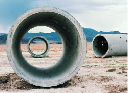
The Lightning Field, (1977), by the American sculptor Walter De Maria, was commissioned and is maintained by the Dia Center for the Arts. Isolated in and interacting with the high desert of southwestern New Mexico, the sculpture consists of 400 stainless steel poles situated in a rectangular grid array one mile by one kilometer.
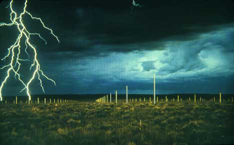Charles Ross’s Star Axis is an Earth/Sky sculpture and a naked eye observatory that reveals a star-cycle encompassing human history.
Presently being created on small mesa in northern New Mexico where the Sangre de Cristo Mountains meet the eastern plains, this major earthwork is scheduled to be completed for the millennium. At its outside dimensions, Star Axis will be eleven stories high and one-tenth of a mile across.
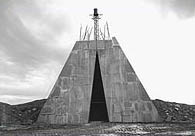 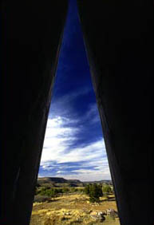The work has two main elements: the Star Tunnel, in which you walk through the entire history of the Earth's changing alignment to our North Star, Polaris; and the Solar Pyramid, where you can view an hour of the Earth's rotation.
Star Axis allows the viewer to walk through layers of celestial time, making directly visible the 26,000-year cycle of precession in the Earth's shifting alignment with the stars.
Chaco Culture National Historical Park preserves one of America's most significant and fascinating cultural and historic areas.
Chaco Canyon was a major center of ancestral Puebloan culture between AD 850 and 1250. It was a hub of ceremony, trade, and administration for the prehistoric Four Corners area - unlike anything before or since.
Chaco is remarkable for its monumental public and ceremonial buildings, and its distinctive architecture. To construct the buildings, along with the associated Chacoan roads, ramps, dams, and mounds, required a great deal of well organized and skillful planning, designing, resource gathering, and construction. The Chacoan people combined pre-planned architectural designs, astronomical alignments, geometry, landscaping, and engineering to create an ancient urban center of spectacular public architecture - one that still amazes and inspires us a thousand years later.
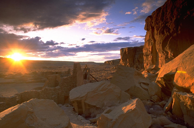 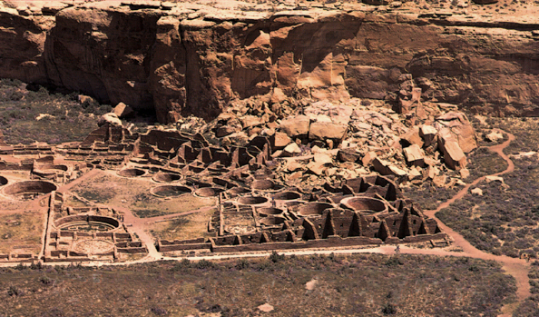Aztec Ruins National Monument preserves structures and artifacts of Ancestral Pueblo people from the 1100's through 1200s. People associated with Chaco Canyon to the south built and used the structures, then people related to the Mesa Verde region to the north used the site in the 1200's. The monument was established in 1923, and designated a World Heritage Site in 1987.
For more information click here.
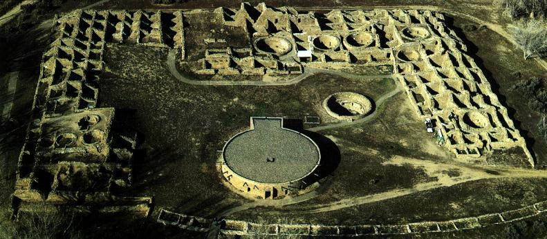Mesa Verde National Park was established in 1906 to preserve the archeological sites that "Pre-Columbian Indians" built on the mesa tops and in the alcoves of a score of rugged canyons. The park, containing 52,073 acres of Federal land, is a unit of the National Park System and is administered by the National Park Service of the Department of the Interior.
Mesa Verde, Spanish for "green table", rises high above the surrounding country. For about 1,300 years, agrarian Indians occupied the mesa and surrounding regions. From the hundreds of dwellings that remain, archeologists have compiled one of the most significant chapters in the story of prehistoric America. There are over four thousand known archeological sites in Mesa Verde National Park. Approximately 600 of these are cliff dwellings.
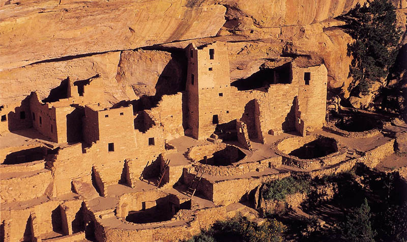 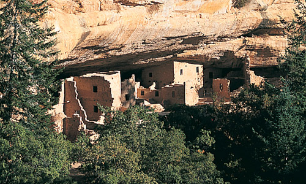
Arches National Park preserves over two thousand natural sandstone arches, including the world-famous Delicate Arch, in addition to a variety of unique geological resources and formations. In some areas, faulting has exposed millions of years of geologic history. The extraordinary features of the park, including balanced rocks, fins and pinnacles, are highlighted by a striking environment of contrasting colors, landforms and textures.
Canyonlands National Park preserves a colorful landscape of sedimentary sandstones eroded into countless canyons, mesas and buttes by the Colorado River and its tributaries. The Colorado and Green rivers divide the park into four districts: the Island in the Sky, the Needles, the Maze and the rivers themselves. While the districts share a primitive desert atmosphere, each retains its own character and offers different opportunities for exploration and learning.
For more information: nps.gov/arch | nps.gov/cany
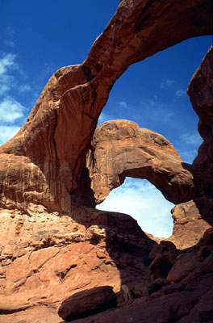 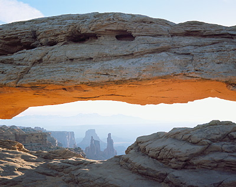